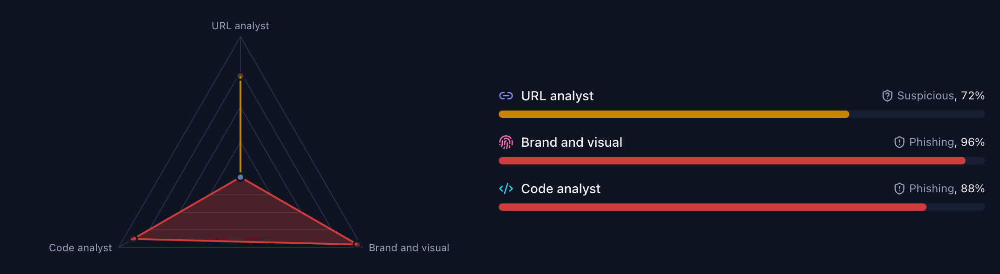
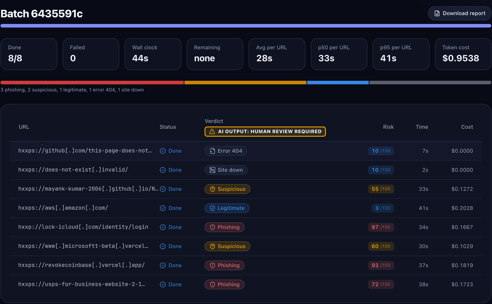

Judges the findings, gives the verdict, writes the report

In this scan the specialists disagreed: the link alone looked suspicious, the page and its code looked like phishing. The orchestrator weighed the evidence and returned phishing, risk 93.
Specialists: Claude Sonnet 5.5 · Orchestrator: Claude Opus 5.507
Batch
Hundreds of links, one queue, one summary
01 · IN
Paste URLs or upload a CSV. Up to 200 in the app, 1,000 by API.
02 · QUEUE
One scan per URL on the same SQS queue and worker.
03 · PROGRESS
Counts by verdict, timing and cost update every 2 seconds.
04 · SUMMARY
A per-URL table and a downloadable report.

Web console, earlier test run. URLs defanged for this slide.08
API
Every route is SigV4. Post, poll, read.
README.md · Use the API
id=$(awscurl --service execute-api --region "$AWS_REGION" -X POST "$API/scan" \
-H 'Content-Type: application/json' -d '{"url": "https://example.com"}' | jq -r .scan_id)
# poll until the scan is COMPLETE or FAILED
until awscurl --service execute-api --region "$AWS_REGION""$API/scans/$id" > scan.json &&
jq -e '.status == "FAILED" or .status == "COMPLETE"' scan.json > /dev/null; do sleep 3; done
jq '{status, verdict: .verdict.verdict, risk: .verdict.risk_score,
action: .verdict.action, page_observed: .verdict.page_observed}' scan.json
Pre-publish gate: hold for a person
when the scan failed, the action is warn or
block, the risk is 70 or more, or the page was
not observed.
Batches, idempotent retries and lookups: docs/api.md09
Measured results · latency flags on vs off
About twice as fast and a third cheaper, same accuracy
Median scan time
20 to 23 s
all on, two runs · vs 41.5 s all off
Model cost per scan
$0.09
mean, all on · vs $0.13 all off
Phishing caught
47 / 52
on and off alike · false positives 2 of 50 in both
Of the latency flags, only directOrchestration has a clearly measured effect on its own: off, it added about 8 to 11 s at the median and about 47% more cost. The others were inside run-to-run noise and are not separately measured.
2026-11-03, test stack, us-west-2, 110 URLs (60 phishing, 50 legitimate; 8 dead left out), episodic memory off, 25 scans in flight. Scan time is worker start to verdict. Source: docs/evaluation.md.
10
Measured results · 407 live URLs
What a pre-publish gate would hold
Phishing caught (recall)
0.883
166 of 188 phishing URLs
False positive rate
0.046
10 of 219 legitimate URLs
Scan time, median / p90
18.6 s
p90 31.2 s · before: 37.8 s
Caught means a phishing verdict, or suspicious with risk 50 or more. The labelled set is private, so reproduce the method with your own labelled URLs.
2026-11-03, test stack, us-west-2, 448 URLs submitted at once (224 from a public phishing feed, 224 legitimate), 407 live, episodic memory off, 25 in flight. Source: README.md, docs/evaluation.md.
11
Security by design
Built to be careful with hostile pages
Signed access only
The API takes SigV4 (IAM) calls only. The console signs in with Amazon Cognito, TOTP MFA optional or required, behind CloudFront and AWS WAF.
Never on your machine
Pages open in AgentCore Browser. Agents never type, submit forms or solve bot checks. Every outbound request passes an SSRF guard.
Guardrails both ways
Amazon Bedrock Guardrails check every submitted URL and every report. URLs in model text are defanged.
Encrypted and scoped
AWS KMS customer managed keys on tables, buckets, queues and logs. One IAM role per component, each wildcard explained.
Details: docs/security.md, docs/threat-model.md12
Responsible use
The verdict is advisory. A person makes the call.
Labelled as AI
Every result carries "AI-generated analysis: human review required".
Honest about gaps
If a warning or bot check hid the page, page_observed is false and the verdict stays at suspicious.
Sample code
For learning and prototyping, not production ready. Review and test before real use.
docs/responsible-ai.md13
Cost
Pennies per scan, a small idle floor
Idle stacks
$14 to $15
per month, estimate · mostly AWS WAF and KMS
Per scan
$0.105
$0.090 tokens, measured + about $0.015 other services, estimate
1,000 scans a month
$120 to $130
computed: measured tokens plus estimates, with storage
Every resource is tagged with Project and Owner, so spend shows up in Cost Explorer. The Insights page shows token spend per URL, batch and model.
Assumptions: us-west-2 application and us-east-1 edge stack, on-demand prices, no free tier; token mean measured 2026-11-03 on 407 live URLs. Per-service breakdown: docs/cost.md.
14
Deploy and clean up
Three commands up. One command down.
deploy · about 8 minutes the first time
# 1. get the code and dependencies
git clone https://github.com/aws-samples/sample-agentic-phishing-detection.git
cd sample-agentic-phishing-detection && uv sync --all-packages
# 2. once per account
npx aws-cdk@2.1143.0 bootstrap aws://<account-id>/$AWS_REGION \
aws://<account-id>/us-east-1
# 3. deploy, tagged with your team
cd infra && npx aws-cdk@2.1143.0 deploy --all -c owner=<team>
clean up
cd infra
npx aws-cdk@2.1143.0 destroy --all
Deletes stored scans and every Cognito user. Then confirm nothing tagged Project=phish-triage is left in both Regions.
README.md · Quick start, Clean up15
Next steps
Try it on your own links
01
Deploy in a sandbox
One CDK command, in your own account.
02
Measure on your data
Score it against links you have already labelled.
03
Pilot a gate
Hold risky links for review through the API.
04
Tune and clean up
Models, concurrency and retention are deploy options.